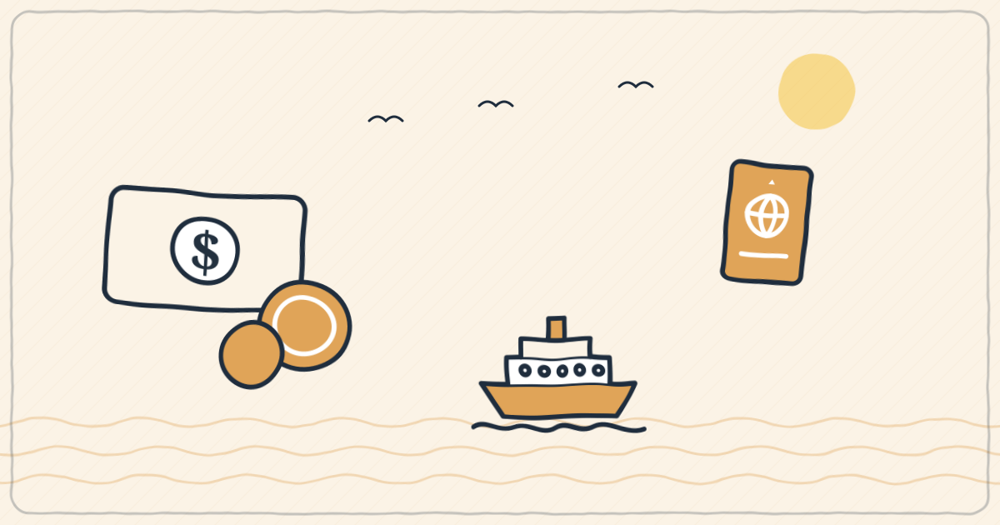

Booking a Cruise in Canadian Dollars: When It Pays Off
Price the same cabin both ways: the line's CAD quote against the USD fare converted at your card's real rate plus any foreign fee. Book the lower one. On board, your account runs in US dollars however you paid, so use a no-foreign-fee credit card and refuse any offer to convert your bill to CAD.

There is no standing answer to "CAD or USD?" because the cruise line's Canadian price moves on its own schedule while your card tracks the market. The job is a two-minute comparison on the day you pay. The bigger and more predictable saving is on board, where every line charges in US dollars and the choices you make at check-in decide how much the conversion costs you.
Why cruise lines show Canadians a different price
Most major lines run a Canadian storefront that quotes fares in CAD to anyone booking from a Canadian address. Behind that price sits the line's internal exchange rate, updated when the line chooses, usually with a cushion added so the company does not lose money if the loonie slides.
That cushion is why a CAD fare can be above, or below, what your own bank would charge for the USD version. The line is making a currency bet on your behalf, and you only find out who won by doing the arithmetic.
How to compare a CAD and a USD cruise fare
- Get both quotes for the identical cabin category, sailing and fare type. Ask a travel agent for both, or compare the Canadian and US versions of the line's site.
- Confirm both totals include taxes, port fees and any prepaid gratuities. Lines present these differently on the two sites.
- Multiply the USD total by today's mid-market rate.
- Add your credit card's foreign transaction fee, typically 2.5% on Canadian cards, or zero if you hold a no-fee card.
- Choose the lower total and keep the whole booking, from deposit to final payment, in that currency.
What a CAD booking buys you besides price
A Canadian-dollar booking locks the exchange rate on the day you book. Pay a deposit now and the balance in four months, and the balance costs exactly what the confirmation says. A USD booking converts each payment at that day's rate, so a weaker loonie by final payment can add a few percent to a fare you thought was settled.
For anyone budgeting a trip to the dollar, that certainty can matter more than a small saving. The same logic applies to prepaying gratuities and drink packages in CAD where the line allows it, and to a group block of eight or more cabins, which is held in one currency for everyone who books into it.
What happens to the onboard account
Here the choice is made for you. The major lines settle shipboard spending in US dollars for every passenger, Canadian or not. Alaska round trips from Vancouver, Caribbean sailings from Florida, Mexico from California: all USD on board. A handful of European itineraries use euros instead.
| Where the money goes | Currency on board | What helps |
|---|---|---|
| Daily gratuities | USD | Prepay in CAD at booking if offered |
| Drinks, specialty dining, wifi | USD | A no-foreign-fee credit card |
| Ship-booked excursions | USD | Book and pay before sailing in your booking currency |
| Spa, shops, casino | USD | Same card; keep receipts for the border |
| Final statement | USD | Decline conversion to CAD |
Which card to register on a cruise
A credit card with no foreign transaction fee is the single most useful piece of plastic a Canadian cruiser owns. On a C$1,800 onboard bill, the standard 2.5% fee is about C$45, gone on every sailing for nothing in return.
Avoid registering a debit card. Ships place rolling holds on the account as you spend, and those holds can tie up cash for days after you disembark. Some banks also layer their own fees on foreign debit transactions. A credit card absorbs the holds without touching your chequing balance.
Cash ashore: do Canadians need US dollars?
In Alaska, Hawaii and US Caribbean ports such as St. Thomas and San Juan, yes, it is the only currency. Across most of the Caribbean, the Bahamas and Mexican cruise ports, US dollars are accepted everywhere, often with change given in local currency. Bring small bills for tips, taxis and market stalls, and withdraw once from a bank-owned ATM rather than a standalone machine with its own fee. Europe means euros, kroner or pounds, though cards cover most of it.
For what you bring back, including the C$800 allowance after 48 hours, see cruise ship duty-free rules.
Should you wait for a better exchange rate before booking?
Nobody reliably predicts the loonie, and cruise fares tend to rise as the sailing date nears. If a CAD fare fits your budget today, booking it removes the exchange risk entirely. If you have a no-fee card and a flexible budget, booking in USD lets you benefit if the dollar strengthens, at the cost of some uncertainty. What a swing actually costs, payment by payment, is worked through in how the exchange rate changes your cruise cost.
Either way, the fare is only part of the bill. A full Alaska budget, including gratuities and excursions in Canadian terms, is worked through in what an Alaska cruise from Vancouver really costs, and the broader value question is in cruise vs land vacation costs.
Want this checked for your own sailing? A licensed cruise consultant can price it up and answer questions for free, with no obligation.
Ask a cruise expert →Four moves that cover it
Compare both currencies on the day you pay. Keep every payment in the currency you booked. Register a no-foreign-fee credit card, not debit. Decline conversion to CAD on board. For a couple on a week-long sailing, those four habits are regularly worth C$100 or more.
Still wondering?
Is it cheaper to book a cruise in CAD or USD?
Neither wins every time. The line's CAD price is built from its own exchange rate with a margin, so some weeks it beats your credit card's conversion and some weeks it loses. Converting the USD fare yourself at today's rate, fees included, is the only way to know for your booking.
Does a cruise ship charge in Canadian dollars?
Almost never. Shipboard accounts on the major lines run in US dollars (euros on some European sailings). Your drinks, tips, wifi and excursions build up in USD, and the ship may offer to settle in CAD at a rate that is nearly always worse than your bank's.
Can I change my cruise booking from USD to CAD later?
Usually not without cancelling and rebooking, which can cost your deposit once penalties apply. Decide on the currency before you pay anything, and keep every later payment, including gratuities and packages, in that same booking currency.